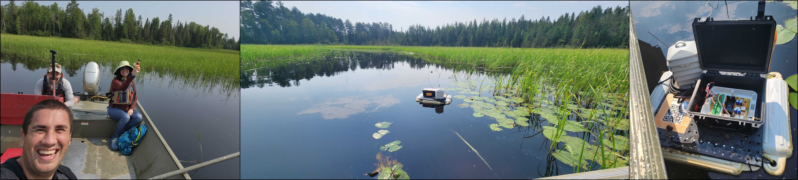

What’s Happening
News and Updates
Papers, significant project updates, awards, presentations, highlights, press, and grants from my orbit, especially the lab (Ka Moamoa) and the foundation, in reverse chronological order.
Recent Highlights: A new Communications of the ACM opinion column on AI, water, and the public trust; a $1M NSF CPS grant for community-maintained AI infrastructure in Hawaiʻi; twelve major papers accepted across CHI, MobiSys, CVPR, SenSys, ICRA, IDC, and ICT4S; three ACM best-paper honors (UIST, ENSsys, plus honorable mentions at CHI, IDC, and CSCW); op-eds on AI and data centers in Hawaiʻi and Georgia; a trip to Rhizome's 7x7 at the New Museum; and selection to the Eahou Global Resilience Cohort with Purple Maiʻa.
09/2026
✍️ New Communications of the ACM opinion column: "Who Owns the Wai (Water)? AI, Power, and the Public Trust". The physical costs of AI, the land, energy, water (wai), and labor behind data centers, need public governance rather than private promises. Drawing on Hawaiʻi's kānāwai water law, the column argues AI infrastructure should be held in the public trust: transparent about its resource use, paying for the costs it imposes, subject to real community authority over siting, and with public or community-controlled alternatives where infrastructure has become too concentrated.
08/2026
Awarded a new $1 million NSF CPS-CIR grant, "Community-maintained Resilient AI Infrastructure for Local Food Security in Hawaii", collaborative with Purple Maiʻa Foundation (PI Donavan Kealoha, co-PI Kelsey Amos). The project builds locally-grown, solar-powered AI compute clusters from low-cost and reused hardware, bringing AI decision support to farms across the Hawaiian Islands even through power and connectivity disruptions.
06/2026
Paired with Chadian artist AfrotroniX (Caleb Rimtobaye) as the closing artist/technologist pair for Rhizome's 7x7 2026: Containment at the New Museum's 30th anniversary (re)opening in NYC. Our piece, "Machine unlearning through small language models," envisioned AI as a tool for preserving and rehearsing our respective languages: read more in Rhizome's recap.
06/2026
Our SpiderCam project, low-power 3D depth sensing inspired by jumping spiders, is a Highlight Paper (top 3%) at CVPR 2026, and covered by Popular Science.
06/2026
Kumu Connect wins a Best Paper Honorable Mention at ACM IDC 2026, for culturally-authentic AI tools that support educator agency and data sovereignty in Hawaiian K-12 CS education.
05/2026
SoundOff, our lab's low-cost, battery-free passive ultrasound tags for smart home sensing, made a splash in the press: Georgia Tech, TechXplore, Hackster, and more.
05/2026
"Raising Soil Microbial Fuel Cells into Robust Bio-Batteries" wins a Best Paper Award at ACM ENSsys 2026.
05/2026
Co-authored an op-ed with Keolu Fox, Kelsey Amos, and Keoni DeFranco in Honolulu Civil Beat: "AI Data Centers Are the New Plantations—Unless Hawaiʻi Builds Them Differently."
05/2026
Delivered the keynote "AI is the Next Plantation: Unless We Rethink It" at Eahou Fest in Honolulu, and was selected for the Eahou Global Resilience Cohort (29 selected from ~500 applicants across 50 countries) with Purple Maiʻa.
05/2026
Op-ed with Ahmed Saeed in The Atlanta Journal-Constitution: "Georgia's Data Center Boom Requires a Strategy, Not Just Hoping for the Best."
04/2026
Our paper on the Noondawind dashboard wins a Honorable Mention at ACM CHI.
04/2026
Ten major publications accepted! Two papers accepted to CHI, MobiSys, and ICT4S, and one each to CVPR, SenSys, ICRA, and IDC.
10/2025
Our paper on Conservation Technologies in Madagascar wins a Honorable Mention at CSCW.
10/2025
Another successful Summit on Responsible Computing, AI, and Society in Atlanta.
09/2025
Collaborative work with UMD on a Solderless, Soluble Circuit Board wins a Best Paper Award at UIST 2025.
08/2025
KumuConnect is selected by MIT Solve for the 2025 Indigenous Communities Fellowship.
04/2025
02/2025
Our Hawaiʻi work is highlighted in the Raspberry Pi Foundation's Hello World Magazine.
01/2025
Honored to be selected for a Presidential Early Career Award for Scientists and Engineers (PECASE), the highest honor bestowed by the U.S. government on outstanding scientists and engineers early in their careers.
11/2024
TerraCell won first place in the 2024 Prototypes for Humanity competition in the Energy category.
10/2024
Leading the bioelectronics effort for a $35 million ARPA-H effort fighting diabetes.
10/2024
We presented Kaona, a Hawaiian Futurism tabletop RPG, at CHI Play.
07/2024
A successful season complete of manoomin sensor check-ins with Wisconsin tribes.

06/2024
My former postdoc Nivedita Arora wins the ACM Doctoral Dissertation Award.
05/2024
05/2024
04/2024
03/2024
We led a Communications of the ACM review paper on intermittent computing.
01/2024
Dirt-powered computing paper published in IMWUT and in the press.
12/2023
We had the honor of hosting Georgia Tech's President Angel Cabrera in our lab.

10/2023
New large NSF grant ($2 million) on carbon nutrition labels for IoT devices with Cornell and Harvard.
09/2023
Our lab is part of a $45 million ARPA-H effort to cut cancer deaths in half. Led by Rice University, with MD Anderson Cancer Center, CMU, Northwestern, and others on the project.
09/2023
07/2023
06/2023
Panelist for a plenary panel on equitable evaluation at ACM RESPECT.
06/2023
Rishabh presented our work on Batteryless flying things at DroNet.
05/2023
Keynote for the staff of the National Academies of Sciences, Engineering, and Medicine DEI Speaker Series.
05/2023
03/2023
Protean named a SIGMOBILE Research Highlight, printed in GetMobile Magazine.
11/2022
We won the Best Position Paper Award at ENSsys for envisioning approaches to circularity in computing.
11/2022
10/2022
I was awarded a VMware Early Career Faculty Award.
09/2022
I gave a Keynote Address at the annual Tapia Celebration of Diversity in Computing Conference.
09/2022
After five formative years at Northwestern, I joined Georgia Tech as an Associate Professor.
08/2022
NSF funded our $5 million Coastlines and People regional Hub on sustainability, focusing on Manoomin (wild rice) as a lynchpin of the ecosystem and Indigenous-led conservation.
05/2022
I wrote about inclusive, sustainable computing for the United Nations DESA monthly SDG blog.
04/2022
ACM Tech News covers our work on enabling students to program batteryless devices with MakeCode.
02/2022
I was named a Sloan Fellow in Computer Science.
02/2022
I won my NSF CAREER Award on Intermittent Computing.
02/2022
National Science Foundation News covers our FaceBit project.
01/2022
Quoted in the Washington Post about FaceBit and the future of exercise.
01/2022
11/2021
Featured in the Bulletin of the Atomic Scientists for sustainable computing.
10/2021
Named one of two Outstanding Young Alumni by Clemson University's School of Engineering.
09/2021
Named to the Brilliant 10 by Popular Science for powering electronics without batteries.
09/2021
Battery-free Game Boy wins a Distinguished Paper Award at IMWUT/UbiComp 2021.
08/2021
I am the 2021 Most Promising Engineer or Scientist awarded by AISES.
08/2021
NSF CISE funds our CNS Small proposal on timekeeping for intermittent computing.
07/2021
NSF CISE funds our CNS Medium proposal on battery-free body networks with UMass collaborators.
07/2021
Communications of the ACM covers our work on "A Battery-Free Internet of Things" in the July issue.
06/2021
Expert panelist for the UN Department of Economic and Social Affairs global policy dialogues.
06/2021
Honored to win the Allen Taflove Best Teacher Award this year in ECE.
06/2021
Named to the Breed Chair of Design and one of eleven Segal Faculty Fellows in the McCormick School.
05/2021
We kick off our DARPA project building a Living Implantable Pharmacy with wearable controller.
04/2021
Northwestern Magazine's spring issue featured my op-ed, "The World Needs Native Scientists Now."
03/2021
I won the 3M Non-Tenured Faculty Award, supporting outstanding early career faculty in STEM.
02/2021
We begin our NSF-funded CIVIC project collaborating with Ojibwe nations to strengthen resilience.
02/2021
Our work on automated N95 decontamination is featured on ACM Tech News.
12/2020
Intermittent computing featured on Seeker's Focal Point Series, highlighting the Battery-free Game Boy.
10/2020
The Wall Street Journal covered perpetual computing and highlighted the Battery-free Game Boy.
09/2020
Interviewed on BBC's Newsday on the Game Boy (segment starts at 18:40).
09/2020
Major press coverage for the Battery-free Game Boy on CNET, BBC's Newsday Radio, The Verge, and others.
09/2020
Battery-free Game Boy won the Best Presentation Award – Audience Choice at ACM UbiComp 2020.
09/2020
NSF CISE funds our CPS Medium proposal on building smart green infrastructure. Batteries not included.
08/2020
Battery-free Game Boy accepted to IMWUT/ACM UbiComp 2020, learn more here.
05/2020
Wrote a viewpoint article for Communications of the ACM on IoT security and privacy.
05/2020
NSF CISE funds our RAPID proposal developing smart, batteryless masks for COVID-19.
04/2020
Paper on eating detection accepted to IMWUT/ACM UbiComp 2020.
11/2019
Two full papers on intermittent computing accepted to ACM ASPLOS 2020.
09/2019
Wrote a feature for ACM XRDS Magazine on battery-free mobile computing, preprint here.
08/2019
Paper on the experience of the Amulet health wearables project accepted to ACM MobiCom 2019.
08/2019
Paper on privacy vs. utility for activity-oriented cameras accepted to IMWUT/ACM UbiComp 2019.
06/2019
Delivered a keynote lecture titled Why Wear a Battery? at WearSys, colocated with MobiSys in Seoul.
06/2019
NSF CISE funds our proposal exploring how privacy concerns affect eating behavior modeling.
05/2019
NSF ECCS funds our proposal on conformable and durable synthetic skin.
03/2019
I am serving as TPC Chair for ENSsys 2019.
02/2019
NSF CISE funds my CRII proposal on Adaptive Intermittent Computing.